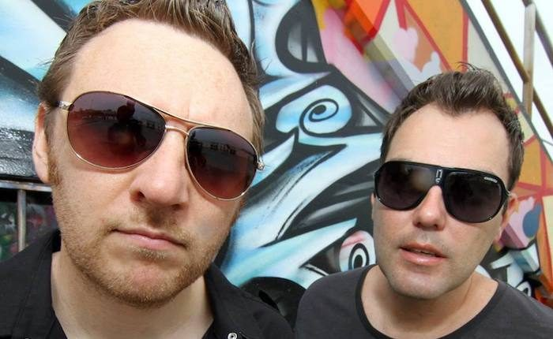

Binary Finary Show Their Veteran Game With Exclusive Dreamstate SF 2017 Mix


Alongside A-leaguers like Ferry Corsten and Paul van Dyk, UK’s Binary Finary is among the true veterans of the trance genre. Nearly 20 years ago—when the sound was reaching its first zenith—they penned the all-time classic anthem “1998.” The record encapsulated the heightened emotions that resonated through the early trance scene and have stayed strong to this day.
“We feel very lucky and humble that ‘1998’ is still being played out there and still gets attention,” says the duo. “Really quite amazing that we are still talking about this track nearly 20 years on.”
Core members Matt Laws and Stuart Matheson had largely retired from performing and producing, but at the end of the noughties, the pair were convinced by Australian DJ and promoter Sasha Vatoff to fire up the Binary Finary experience again. As you can see from the track list of their exclusive Dreamstate mix below, there are more than a few of their originals and remixes in there.
Binary Finary are prepped to represent at Dreamstate SF later this month. We got them to talk a little bit about their mix, as well as what else they’re up to in 2017.
How is your year starting off?
The year is going great! It’s going quickly. New additions to the family, and a continuing passion for making music, are making life interesting.
Your most seminal track, “1998,” is approaching its 20th anniversary this year. I have amazing memories of the time when that track was first unleashed, the energy in the trance scene at the time, and what a euphoric and futuristic vibe it all had.
The UK was buzzing around that time. We got totally sucked into the scene and how it was developing and unfolding. Just going to events and raves wasn’t enough, however, and there was a strong pull to start producing music—for ourselves and for our friends. That’s how the little live events started for us, and the basis for the start of the Binary Finary journey.
It’s been around a decade since you guys relaunched with the new live show (I was there at your NYE show at Sensation in Melbourne). How has this evolved?
That was an amazing show. Funny, because I was being hassled by [Australian DJ and promoter] Sasha Vatoff in 2010 to come back and do events. I wasn’t really that interested, but he bugged and bugged me until I said, “Okay, but only if you come and join me.” Within a few days, he came back with Sensation White for a gig.
In terms of the show nowadays, we now DJ the tracks out, but they are mostly our tracks, remakes and edits. We decided to do this to increase the production value of the tracks, because there were some compromises that had to be made to get the whole live angle working. We find the way it works now is better for overall productions. In saying that, it would be good to do the whole live show again; utilizing newer technology than we had back then could really make the live shows work.
Your most recent material definitely has a very pumping 138-BPM vibe to it. Is the whole “back to the roots” vibe of the 138-BPM scene something that appeals to you?
No, not at all. Our sound has always been our sound. We aren’t going back to anything, because we never left. We weren’t interesting in anything other than producing music we like in the Binary Finary way. Nothing has really changed in 20 years; we still write music we like for our mates.
The trance scene has experienced a real reinvigoration recently, thanks to the strength of the scene that’s blossomed in the US. What are your thoughts on what’s happening?
Yes, it’s great. The scene is experiencing a real lift. It’s been through some tough times. You had artists making trance music but not actually calling it “trance” music, because for some reason the name of the genre became smeared. We aren’t too keen with the guys who left the trance scene for EDM, who are now coming back. It seems they left when it was at a low ebb, and they’re now back when it’s getting popular again. Our respect really lies with the artists that stayed true to their roots.
The Dreamstate parties are definitely a big part of why the US scene is so strong. How would you describe your experiences with the parties so far?
One of us played at one of the Dreamstate parties, and the report back was that the crowd was just incredible. The whole Dreamstate vibe is a purely positive and exciting one, which is really what the scene was all about during those days back in the UK. It’s a testament to the crew who put these on and the music lovers who attend—that there really isn’t anything negative about these events.
Tell us a bit about what you’ve included in your Dreamstate mix.
Dreamstate is and will always be all about the music. We are very excited to bring a few remakes and original gems along for the ride. It’s going to be awesome. We are counting down the days.
Mauro Picotto “Komodo 201” (Binary Finary Remix)
Nu-NRG “Dreamland” (Binary Finary 2017 Remix)
Cosmic Gate “Explorations of Space” ( Binary Finary & Kinetica Remake)
Dark Monks “Insane” (Binary Finary Remix)
Oceanlab “Satellite” (Binary Finary Remix)
Binary Finary “Fwuark!”
Binary Finary “The Vortex”
Golden Girls “Kinetic” (Binary Finary Remix)
Genlog “Mockmoon” (Binary Finary Remix)
Digger “Church of Ra” (Binary Finary Remix)
Binary Finary “1998” (Alex M.O.R.P.H. Remix)
Follow Binary Finary on Facebook | SoundCloud